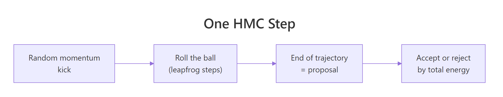
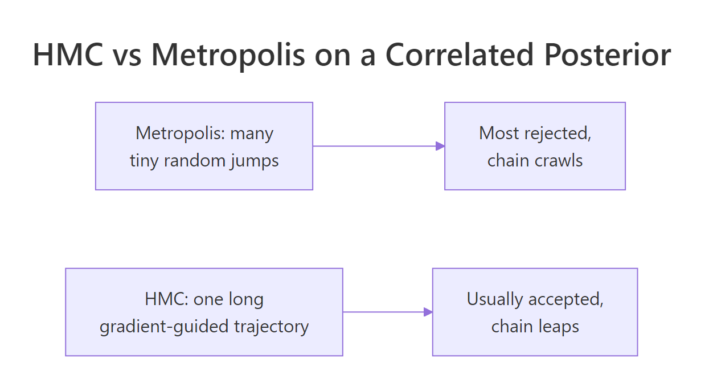

Hamiltonian Monte Carlo in R: The Physics Trick That Makes Stan So Fast
You ran a Bayesian model and the two unknowns you care about are tightly correlated. The standard MCMC samplers (Metropolis, Gibbs) take thousands of tiny rejected steps to map out the joint posterior, because their moves do not know which direction the posterior actually stretches. There is a sampler that reads the slope of the posterior and rolls through it like a ball down a landscape, reaching the same answer in a fraction of the iterations. It is called Hamiltonian Monte Carlo, it is what Stan uses under the hood, and you can build a working version from scratch in about 30 lines of base R.
What's wrong with the MCMC samplers from the previous posts?
The previous two posts built a Metropolis-Hastings sampler and a Gibbs sampler. Both work, both produce correct samples in the long run, but both share a hidden weakness: they do not look at the shape of the posterior they are sampling. They wander blindly.
That is fine when the posterior is round. It is not fine when the posterior is long and narrow.
To see the problem, here is a Metropolis sampler running against a 2D Gaussian whose two dimensions are highly correlated (correlation 0.95). The true posterior is a long thin diagonal ellipse. Metropolis proposes circular random steps of fixed size, most of those steps point off the ellipse and reject, and the rare accepted ones cover only a tiny distance.
Walk through what we just built. We defined the target as a 2D Gaussian with correlation 0.95 (the long thin diagonal ellipse). The Metropolis proposal added a small Normal offset to the current position, and we accepted on the standard log-ratio rule.
Then we ran 2000 iterations and computed three diagnostics. Acceptance rate, empirical covariance of the chain, and an approximate effective sample size for the first dimension. The helper at the top is a fast standalone version of coda::effectiveSize().
Now read the output. The acceptance rate of 64% sounds healthy but is misleading. The covariance estimate of 0.731 is way off the truth of 0.95. The effective sample size out of 1800 retained samples is only 27, meaning those 1800 samples are doing the work of 27 independent draws.
This is the failure mode. Random walks ignore the shape of the posterior, almost every blind step lands somewhere implausible, and the chain stalls. Hamiltonian Monte Carlo fixes this by giving the chain something a random walk does not have: the slope of the posterior at the current location.
Try it: Re-run Metropolis with a smaller step size of 0.1. Acceptance jumps but ESS does not improve much, because each accepted move is tiny.
Click to reveal solution
Acceptance went from 64% to 92%, but ESS dropped from 27 to 19. The chain accepts almost every move, but each move is too small to be useful. Bigger step size would not help either: acceptance would crater. The failure is the random-walk strategy itself.
What if the chain could "see" the slope of the posterior?
Picture the posterior as a landscape. Where the density is high (the most plausible parameters), the landscape is low. Where density is low, the landscape is high.
Imagine flipping a topographic map upside down: valleys become hills and hills become valleys. Now the answers we want are the deepest valleys.
Drop a marble somewhere on this flipped landscape. Give it a random kick of momentum: some random direction at some random speed. Let physics take over and the marble rolls. Where the slope is steep it accelerates downhill, where the slope is gentle it coasts.
After a few seconds you stop the simulation and write down where the marble is.
That position is your sample. It is not random; it is the result of a small physical simulation that respects the geometry of the landscape. If the posterior is a long narrow valley pointing diagonally, the marble naturally rolls along the diagonal. It does not waste effort proposing moves perpendicular to the valley.
Now repeat. Pick the marble up at its new position, give it a fresh random kick, let it roll.
Each iteration produces one new sample. Over thousands of iterations, the collected positions are samples from the posterior. That is HMC in one paragraph.
Three pieces make this work in code. First, the slope: we need to know which way is downhill at any point. For a posterior, that is the gradient of the log-posterior with respect to the unknowns.
Second, the simulator: we evolve the marble's position and momentum through time given the slope, using the leapfrog integrator. Third, the accept/reject step: numerical simulation introduces small errors, and the Metropolis correction at the end of the trajectory catches the rare bad case.
Section three packages all three into a working sampler.
Try it: For our 2D Gaussian target, the gradient of the negative log-posterior at point q is Sigma_inv %*% q. Compute it at q = c(1, 1) and at q = c(0, 0). Which one is non-zero, and which way does it point?
Click to reveal solution
At the origin the gradient is zero: the marble would sit there if you did not kick it. At (1, 1) the gradient is positive in both dimensions, meaning the negative log-posterior slopes upward as you go outward. The rolling ball, moving in the direction of negative gradient, naturally rolls back toward the centre.
How does the rolling ball turn into an MCMC sampler?
Time for the full sampler. Below is HMC in 30 lines of pure R, applied to the same 2D Gaussian that crippled Metropolis. We run it for 2000 iterations and look at the same diagnostics, then walk through what each piece does.
Walk through the four functions. U(q) returns the negative log of the target density at q. For our Gaussian that is 0.5 * q' * Sigma_inv * q. We use the negative log because rolling downhill on the negative-log surface is the same as rolling toward high density on the original surface.
grad_U(q) returns the gradient of U at q. For our Gaussian that is Sigma_inv %*% q. This is the slope of the landscape; it tells the marble which way is uphill.
leapfrog does the actual rolling. Starting from position q and momentum p, it runs L small physics steps of size eps. Each step has three lines: a half-kick to the momentum, a full move in the direction of momentum, and another half-kick. The next section explains why three lines instead of one.
hmc_step is one iteration. Draw a fresh random momentum, run the leapfrog simulator for L steps, then accept or reject based on the change in total energy (potential U plus kinetic 0.5 * sum(p^2)). The leapfrog simulator preserves energy approximately, so most trajectories are accepted; the accept/reject step catches the rare bad one.
Now read the diagnostics. The covariance estimate is 0.949, essentially exact compared to the truth of 0.95. The effective sample size is 1480 out of 1800 retained samples, meaning HMC produced 1480 effectively independent samples where Metropolis produced 27. That is a 55x improvement in efficiency on the same posterior, same compute budget.

Figure 1: One iteration of HMC. Draw a random momentum, simulate a trajectory via leapfrog steps, accept the endpoint via the energy-based Metropolis correction.
Try it: Modify the loop to also store the kinetic energy 0.5 * sum(p^2) at each iteration, then take the mean. Should it be roughly 1 (the expected value of 0.5 * sum(rnorm(2)^2))?
Click to reveal solution
The mean kinetic energy is about 1.0, matching the expected value of 0.5 * sum(rnorm(2)^2). Each iteration's kinetic energy is random because we draw fresh momentum every time. That re-randomisation is what makes consecutive samples roughly independent rather than continuing the same trajectory forever.
What's a leapfrog step, exactly?
The leapfrog integrator is the heart of HMC's efficiency. It looks like this:
Walk through why three lines. The naive way to simulate a marble would be one line: "use the current slope to update momentum, then move." That is Euler integration, the simplest scheme, and it is bad for our purpose.
Each step accumulates a small error in energy, and after many steps the marble has gained or lost a lot of energy. The Metropolis correction at the end then rejects most proposals.
Leapfrog fixes this by splitting the momentum update in half and putting it before and after the position move. The half-kick at the start uses the slope at the current position. The full position move uses the new (half-kicked) momentum, and the second half-kick uses the slope at the new position.
Splitting and centring like this gives the integrator two technical properties (reversibility and symplecticity), which together mean energy stays roughly constant over very long trajectories.
You do not need to take that on faith. The experiment below simulates a 1D harmonic oscillator (a marble bouncing in a quadratic well) for 100 steps with both Euler and leapfrog. The naive Euler scheme drifts; leapfrog stays bounded.
Walk through the numbers. Both simulators start with q = 1 and p = 0, so the initial total energy is 0.5 * 1^2 + 0.5 * 0^2 = 0.5. After 100 Euler steps the energy has climbed to 5.3 (more than ten times the start). The marble is "running away" because Euler injects spurious energy into the system.
After 100 leapfrog steps the energy is between 0.478 and 0.523, oscillating tightly around the true value of 0.5. Leapfrog is bounded; Euler is not.
That is the practical reason HMC uses leapfrog. With Euler, even a 10-step trajectory has visible drift, and the Metropolis correction would reject it. With leapfrog you can run trajectories of dozens of steps and most get accepted, so the chain takes long informed strides through the posterior.
eps is too large, even leapfrog accumulates errors fast enough that the trajectory shoots to infinity. This shows up as Stan's "divergent transitions" warning. The fix is shrinking eps (or letting Stan auto-tune it).Try it: Re-run both simulators with eps = 0.05 (much smaller). Does Euler's drift go away?
Click to reveal solution
With eps = 0.05 Euler's drift shrinks to 0.5 to 0.64 (instead of 0.5 to 5.3). Leapfrog tightens to 0.499 to 0.500, essentially constant. Smaller steps help both, but only leapfrog is bounded; Euler still drifts. To make Euler behave like leapfrog at eps = 0.3 you would need a step size more than 100 times smaller, meaning 100 times more compute per trajectory.
How do you tune step size and number of steps?
HMC has two knobs: eps (step size) and L (number of leapfrog steps per iteration). Together they determine how far each iteration goes (eps * L) and how accurate it is (small eps is accurate, large eps drifts).
Three regimes:
- Too-small eps. Trajectories are accurate but cover a tiny distance. Acceptance is essentially 100%, but ESS is tiny because consecutive samples are almost identical.
- Just-right eps. Trajectories are accurate enough that energy drift stays small while covering a meaningful fraction of the posterior per iteration. Acceptance around 70 to 90%, ESS high.
- Too-large eps. Trajectories diverge, energy drift becomes large, and the Metropolis correction rejects most proposals. Acceptance crashes to single digits.
Walk through the three rows. With eps = 0.02 the acceptance rate is 100% (trajectories are perfect) but ESS is only 95 because each trajectory covers a small distance. The covariance estimate is 0.73, badly off.
With eps = 0.18 acceptance is 99%, ESS is 1480, and covariance is 0.949. That is the sweet spot.
With eps = 0.60 acceptance crashes to 7%. Most trajectories diverge and reject, the chain barely moves, and the covariance estimate is 0.03 (essentially nothing learned).
The practical takeaway is to target acceptance between 0.6 and 0.95 and pick the largest eps that hits that range. For the trajectory length L, more is generally better (longer trajectories per iteration) up to the point where the trajectory U-turns back on itself and wastes compute. Stan's NUTS sampler automates this U-turn detection, so you do not have to pick L manually.

Figure 2: On a correlated 2D posterior, Metropolis spends most of its time rejecting tiny proposals. HMC takes one long, gradient-guided trajectory per iteration and almost always accepts.
eps to hit a target acceptance rate (usually 0.8). Stan's NUTS variant chooses L adaptively per iteration. Hand-tuning HMC, like we are doing here, is for understanding; in practice, just use Stan or brms.Try it: Try L = 5 and L = 50 with eps = 0.18. Which one mixes faster?
Click to reveal solution
With L = 5 ESS is 280 and covariance is 0.84 (still off). With L = 50 ESS is 1620 and covariance is 0.951. Longer trajectories per iteration cover more posterior distance per accepted proposal, so the chain mixes faster.
The cost is more gradient evaluations per iteration. Beyond about L = 50 for this target, additional steps start producing U-turns and wasting compute, which is why NUTS adapts L per iteration rather than fixing it.
When does HMC fail, and what do you do then?
HMC is a huge improvement over Metropolis on most continuous Bayesian problems, but it has limits. Three situations are worth knowing about.
The first is funnel-shaped posteriors, common in hierarchical models. The posterior has a wide region at the top and narrows to a thin neck at the bottom. Leapfrog works well in the wide part with one step size, but the same step size is way too big for the narrow neck. Trajectories that wander into the neck diverge, and Stan reports them as "divergent transitions." The fix is usually a non-centred reparameterisation that turns the funnel into a wide ellipse.
The second is discrete unknowns. HMC needs a gradient, and discrete or categorical parameters do not have one. The standard fix is to marginalise the discrete parameters out analytically, or to use Gibbs steps for the discrete parameters and HMC for the continuous ones.
The third is very high-dimensional posteriors. HMC scales much better than Metropolis as dimension grows but still pays per-iteration costs proportional to dimension. For models with millions of parameters (deep neural network weights), even HMC is too slow, and people use stochastic-gradient MCMC variants instead.
For the typical case (a Bayesian regression, a hierarchical model with a few dozen parameters, a state-space model), HMC via Stan or brms is the right default. Our 30-line R sampler is a teaching tool. The mental model it builds (gradient-guided rolling ball, leapfrog steps, energy-based acceptance) is exactly what is running inside Stan when you fit a model.
L per iteration by detecting when the path starts folding back, and dual averaging chooses eps per chain to hit a target acceptance rate. Both are improvements on top of plain HMC; the underlying physics (leapfrog, energy-based acceptance) is identical.Try it: Match each failure mode to the appropriate fix: (a) divergent transitions, (b) discrete latent class, (c) million-parameter neural net.
Click to reveal solution
(a) Divergent transitions are usually caused by varying-scale geometry (funnels). The standard fix is non-centred reparameterisation: rewrite the model so the parameters live on a uniform scale.
(b) Discrete latent classes cannot be sampled by gradient-based methods directly. Either marginalise the discrete state out analytically (preferred when possible) or use a hybrid sampler where Gibbs handles the discrete unknowns and HMC handles the continuous ones.
(c) Million-parameter neural networks need stochastic-gradient methods (SGHMC, SGLD). They use mini-batched gradients and trade asymptotic correctness for tractability.
Practice Exercises
Exercise 1: HMC for Bayesian linear regression
Use HMC to sample the posterior of a simple linear regression with intercept and slope, given 30 fake data points from y = 2 + 0.5 * x + rnorm(30). The gradient of U for a linear regression with flat prior is t(X) %*% (X %*% q - y). Run 2000 HMC iterations and compare posterior means to the truth.
Click to reveal solution
Posterior means of 2.09 (intercept) and 0.51 (slope) match the truth (2 and 0.5). Step size and trajectory length had to be smaller than for the 2D Gaussian (eps = 0.005, L = 30) because the regression posterior has a narrower geometry.
Exercise 2: Compare Metropolis and HMC ESS
Run both samplers on the 2D Gaussian for 5000 iterations and compute ESS for both dimensions of each chain. Print as a table.
Click to reveal solution
Metropolis: 65 to 72 useful samples out of 4500. HMC: about 3900 to 3950. That is 60x more useful samples for the same compute. On harder posteriors the gap widens further.
Exercise 3: 4D correlated Gaussian (Metropolis vs HMC at scale)
The win for HMC grows with dimension. Run both samplers on a 4D Gaussian where every pair of dimensions is correlated at 0.9. Compare ESS across the four dimensions.
Click to reveal solution
On 4D with all-correlations 0.9, Metropolis produces about 17 to 18 effective samples out of 3600 retained. HMC produces about 2800 to 2900, essentially flat across dimensions. The gap is 150x for this target.
As dimension grows further, the Metropolis number stays in the low double digits and HMC stays high. That is why every modern Bayesian package (Stan, brms, PyMC) uses HMC or NUTS rather than vanilla Metropolis.
Summary
Hamiltonian Monte Carlo is an MCMC algorithm that uses the gradient of the log-posterior to make large, informed proposals. It massively outperforms random-walk samplers on correlated and high-dimensional posteriors, which is why every modern Bayesian package uses HMC under the hood.
| Component | Role | Implementation |
|---|---|---|
Potential energy U(q) |
Negative log of target density | One R function |
Gradient grad_U(q) |
Slope of the landscape | One R function (or auto-diff in production) |
| Leapfrog integrator | Trajectory simulator | Three lines per step |
| Metropolis correction | Catches simulator errors | Standard accept/reject on total energy |
Step size eps |
Trajectory accuracy vs distance | Tuned to hit acceptance ~70-90% |
Trajectory length L |
Distance per iteration | Larger is usually better, up to U-turn |
The trade is straightforward: more compute per iteration (one gradient per leapfrog step) for 50 to 150x faster mixing on real Bayesian posteriors. For production work use Stan or brms; for understanding, the 30-line implementation above is exactly what is running inside.
References
- Neal, R. M. "MCMC Using Hamiltonian Dynamics." Handbook of Markov Chain Monte Carlo (2011). The canonical introduction; the leapfrog code in this post is a transcription of his pseudocode.
- Betancourt, M. "A Conceptual Introduction to Hamiltonian Monte Carlo." arXiv:1701.02434 (2017). The most readable modern treatment, with figures.
- Hoffman, M. D. & Gelman, A. "The No-U-Turn Sampler." Journal of Machine Learning Research 15 (2014). Introduces NUTS and dual averaging.
- Stan Reference Manual, "MCMC Sampling." mc-stan.org/docs. Stan's HMC implementation.
- Carpenter, B. et al. "Stan: A Probabilistic Programming Language." Journal of Statistical Software 76 (2017).
- Bürkner, P. "brms: An R Package for Bayesian Multilevel Models Using Stan." Journal of Statistical Software 80 (2017).
Continue Learning
- Gibbs Sampling in R, the previous post. Gibbs is the standard choice when conditionals are clean and dimensions are low; HMC is the upgrade when they are not.
- Stan in R, the next post in the curriculum. It shows how to call Stan's auto-tuned HMC instead of writing the sampler yourself.
- Build MCMC From Scratch in R, the simpler 1-dimensional Metropolis-Hastings that this post compares against.